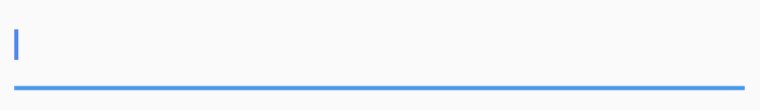
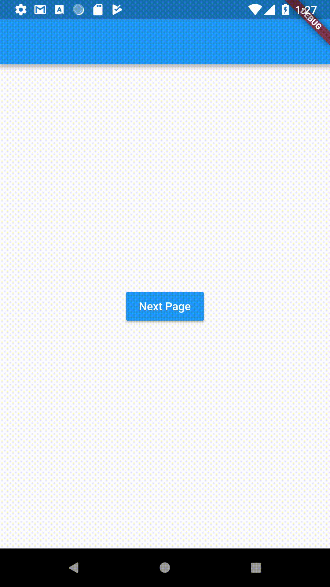
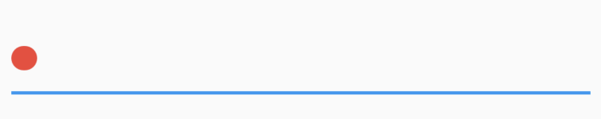
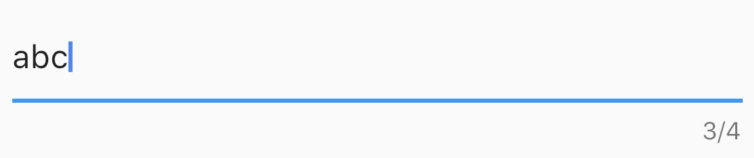
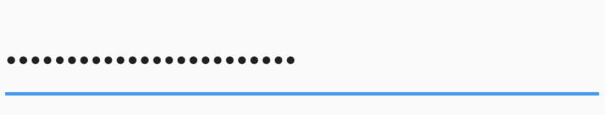
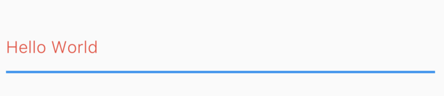
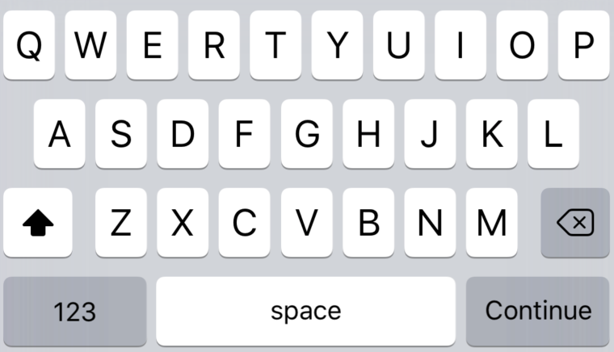
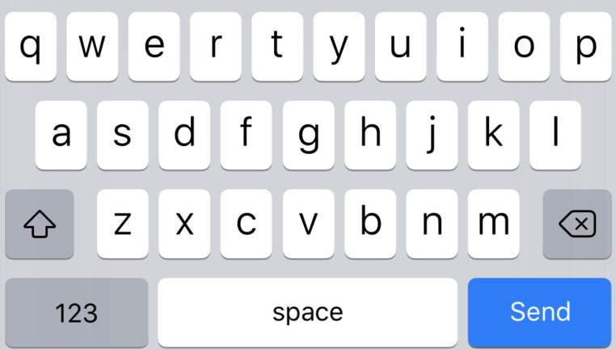

A material design text field.
TextField()
This will render a text box in the screen that looks like the following image
By default, a text field has a decoration that draws a divider below the text field.
This argument specifies whether to enable autocorrection.
To automatically focus on a TextField when the widget is created, set the autofocus field to true.
TextField( autofocus: true, ),
This sets the focus on the TextField by default.
To know how to manually change the focus on demand, see FocusNode.
This argument specifies a TextEditingController to be attached with the TextField widget. With the help of the controller you can do a lot of things like reading/wring text from/to the TextField. To know how to use controller go to TextEditingController section.
The color of the cursor can be changed using this property.
TextField( cursorColor : Colors.green, ),
How rounded the corners of the cursor should be.
How thick the cursor will be.
TextField( cursorColor: Colors.red, cursorRadius: Radius.circular(16.0), cursorWidth: 16.0, ),
The decoration to show around the text field. To know more see InputDecoration section.
If false the text field is "disabled": it ignores taps and its decoration is rendered in grey.
If true, then long-pressing this TextField will select text and show the cut/copy/paste menu, and tapping will move the text caret.
Whether to show input suggestions as the user types. If true, there will be word suggestions while the user types, if false, the words suggestions will be disabled.
TextField( enableSuggestions: true, ),
This argument is used to attach a FocusNode to the TextField widget. It helps to gain focus dynamically. Read FocusNode to learn more.
The type of keyboard to use for editing the text. Use TextInputType class to use different type of keyboard. This enum class defines the following constants:
datetime: The keyboard optimized for date and time information.emailAddress: Optimize for email addresses.multiline: Optimize for multiline textual information.number: Optimize for unsigned numerical information without a decimal point. phone: Optimize for telephone numbers.text: Optimize for textual information.url: Optimize for URLs.TextField( keyboardType: TextInputType.number, ),
The maximum number of characters (Unicode scalar values) to allow in the text field.
TextField( maxLength: 4, ),
By setting the maxLength property, a maximum length is enforced and a counter is added by default to the TextField.
If set, a character counter will be displayed below the field showing how many characters have been entered. If set to a number greater than 0, it will also display the maximum number allowed.
The user cannot type more than maxLength character. But this behaviour can be changed by setting maxLengthEnforced to false. By default maxLengthEnforced is set to true, means the user cannot type more than maximum length. But if this value is false, then it will enforce the TextField to allow character more than maximum length. If maxLengthEnforced is set to false, then more than maxLength characters may be entered, but the error counter and divider will switch to the decoration.errorStyle when the limit is exceeded.
You can also set maxLength to TextField.noMaxLength. For example,
TextField( maxLength: TextField.noMaxLength, ),
The TextField widget defines a constant noMaxLength, which specifies that there will be no limitation on the number of characters but a counter will be added which indicates how many character has been entered to the TextField. It will be a single counter without having a maximum number of character shown at the trailing part of the counter.
If true, prevents the field from allowing more than maxLength characters.
The maximum number of lines for the text to span, wrapping if necessary. If this is 1 (the default), the text will not wrap, but will scroll horizontally instead.
If this is null, there is no limit to the number of lines, and the text container will start with enough vertical space for one line and automatically grow to accommodate additional lines as they are entered.
If this is not null, the value must be greater than zero, and it will lock the input to the given number of lines and take up enough horizontal space to accommodate that number of lines. Setting minLines as well allows the input to grow between the indicated range.
The full set of behaviors possible with minLines and maxLines are as follows. These examples apply equally to TextField, TextFormField, and EditableText.
Input that occupies a single line and scrolls horizontally as needed.
TextField()
Input whose height grows from one line up to as many lines as needed for the text that was entered. If a height limit is imposed by its parent, it will scroll vertically when its height reaches that limit.
TextField(maxLines: null)
The input's height is large enough for the given number of lines. If additional lines are entered the input scrolls vertically.
TextField(maxLines: 2)
Input whose height grows with content between a min and max. An infinite max is possible with maxLines: null.
TextField(minLines: 2, maxLines: 4)
The minimum number of lines to occupy when the content spans fewer lines. When maxLines is set as well, the height will grow between the indicated range of lines. When maxLines is null, it will grow as high as needed, starting from minLines.
Whether to hide the text being edited (e.g., for passwords). When this is set to true, all the characters in the text field are replaced by U+2022 BULLET characters (•). Defaults to false. Cannot be null.
TextField( obscureText: true, ),
Called when the user initiates a change to the TextField's value: when they have inserted or deleted text. This callback doesn't run when the TextField's text is changed programmatically, via the TextField's controller. Typically it isn't necessary to be notified of such changes, since they're initiated by the app itself.
String value = "";
TextField(
onChanged: (text) {
value = text;
},
)
Called when the user submits editable content (e.g., user presses the "done" button on the keyboard).
Called when the user indicates that they are done editing the text in the field.
Called when user taps on the TextField.
If true, then user won't be able to enter text into the TextField. If false, the TextField goes into editable mode. The text is still selectable.
The style to use for the text being edited. Use TextStyle to provide the style.
TextField( style: TextStyle(color: Colors.red, fontWeight: FontWeight.w300), ),
How the text should be aligned horizontally. Use TextAlign class to provide the values. Here are the values you can use:
center: Align the text in the center of the container.end: Align the text on the trailing edge of the container.justify: Stretch lines of text that end with a soft line break to fill the width of the container. Lines that end with hard line breaks are aligned towards the start edge.left: Align the text on the left edge of the container.right: Align the text on the right edge of the container.start: Align the text on the leading edge of the container.Configures how the platform keyboard will select an uppercase or lowercase keyboard. Only supports text keyboards, other keyboard types will ignore this configuration. Use TextCapitalization class to define the values:
characters: Defaults to an uppercase keyboard for each character.none: Defaults to a lowercase keyboard.sentences: Defaults to an uppercase keyboard for the first letter of each sentence.words: Defaults to an uppercase keyboard for the first letter of each word.Changing textInputAction of the TextField lets you change the action button of the keyboard itself.
Defaults to TextInputAction.newline if keyboardType is TextInputType.multiline and TextInputAction.done otherwise.
TextField( textInputAction: TextInputAction.continueAction, ),
TextField( textInputAction: TextInputAction.send, ),
To know more about the values available head on to TextInputAction doc.